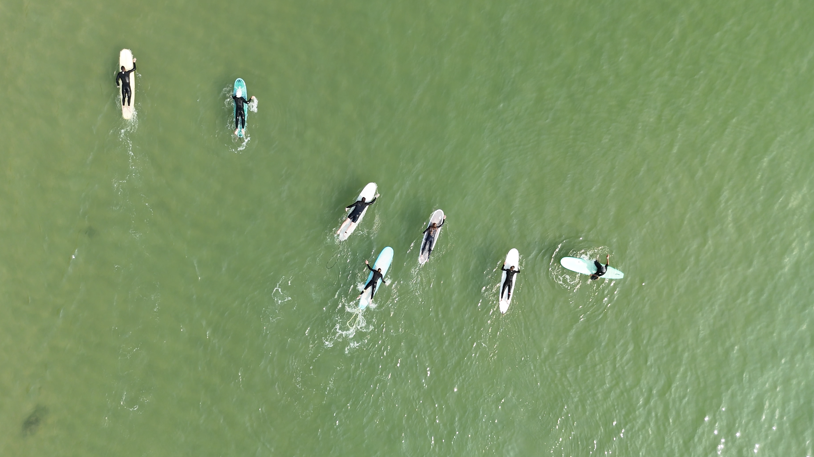
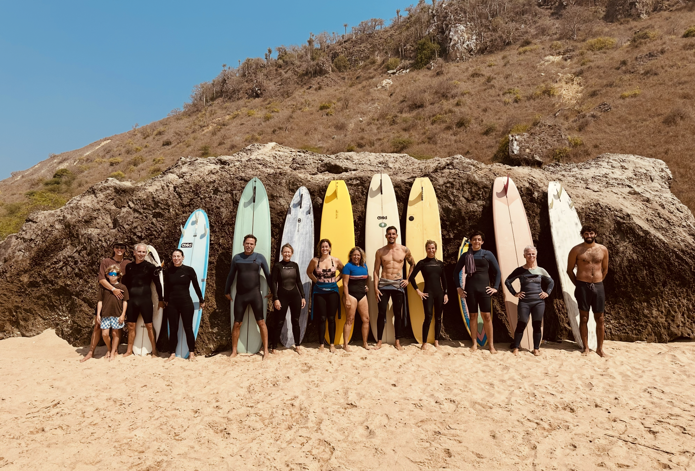
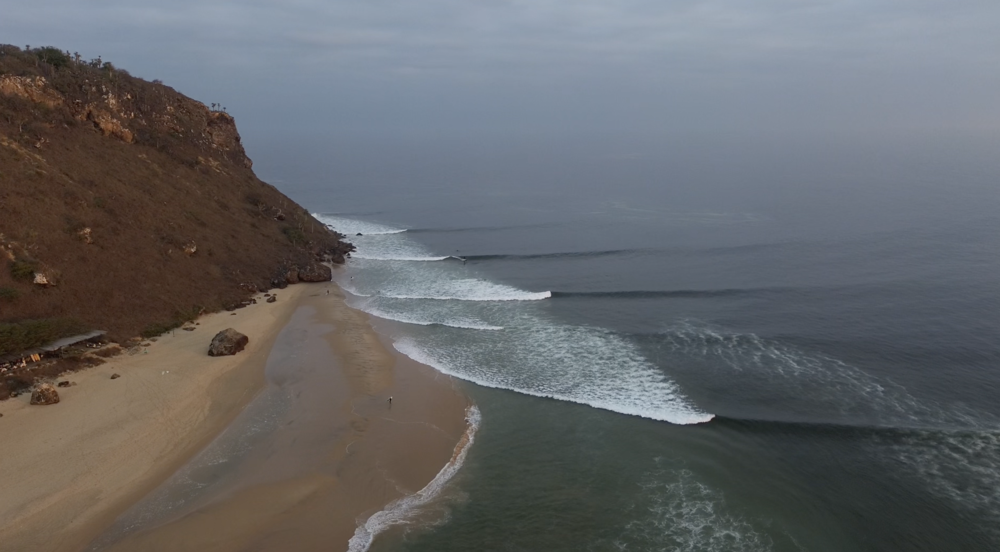
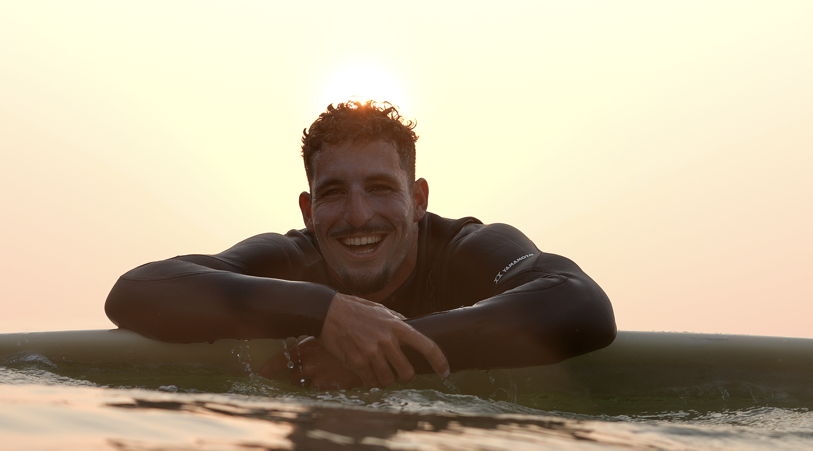
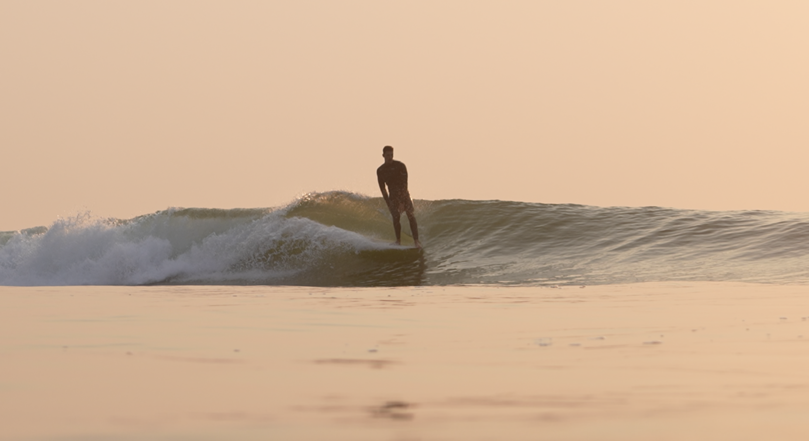
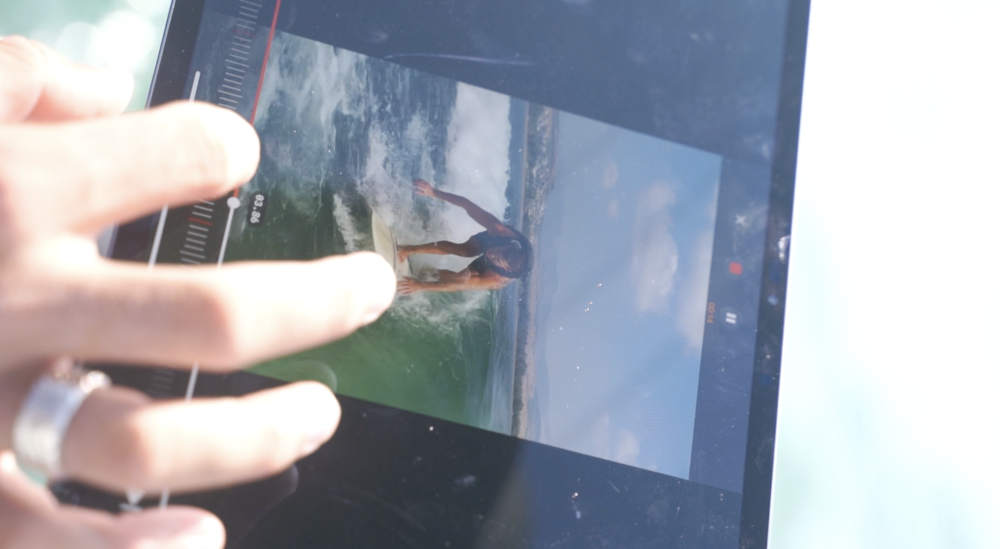

A complete coaching system for measurable, lasting improvement.






Not what was planned — what students talk about when they get back.
Progress is a feedback loop. These six metrics close the loop after every wave — because in order for something to change, something needs to change.
Two active modes of coaching — plus the most valuable thing: the space and bravery to go alone.
Your nervous system is the first thing we prepare each day. Getting it right before a session — and resetting it during — changes everything.
A schedule is shared every evening. Read it before asking. The group rhythm is decided by the waves — when conditions change, everyone gets updated.
The goal is to enjoy — and to keep it that way for everyone. That requires each person looking out for each other, always.
A heads-up on how I coach — and why it comes from exactly one place.
Each day has a single focus — a lens through which everything that session is filtered. The progression is deliberate.
Softly embedded in every day. You'll feel it. We don't need to label it.
Every student leaves with something they can watch forever. Proof of what happened here.
On the final evening, each person shares. These are the prompts that guide it.
Not performative. Real.
10 days in Angola. Guided progression. A personal film to take home. And a plan to keep it going in Israel.